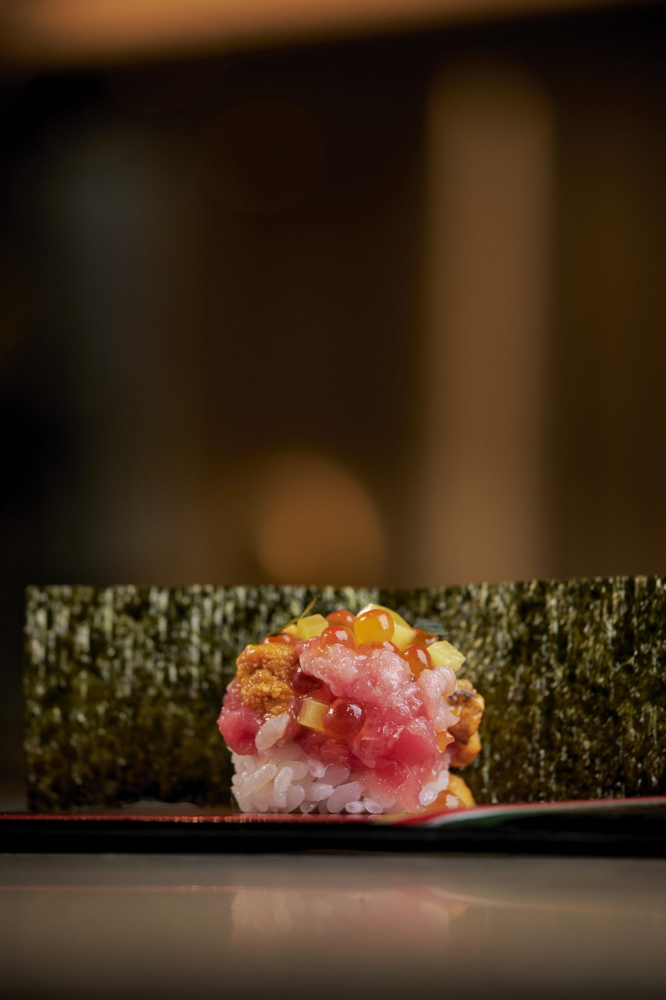
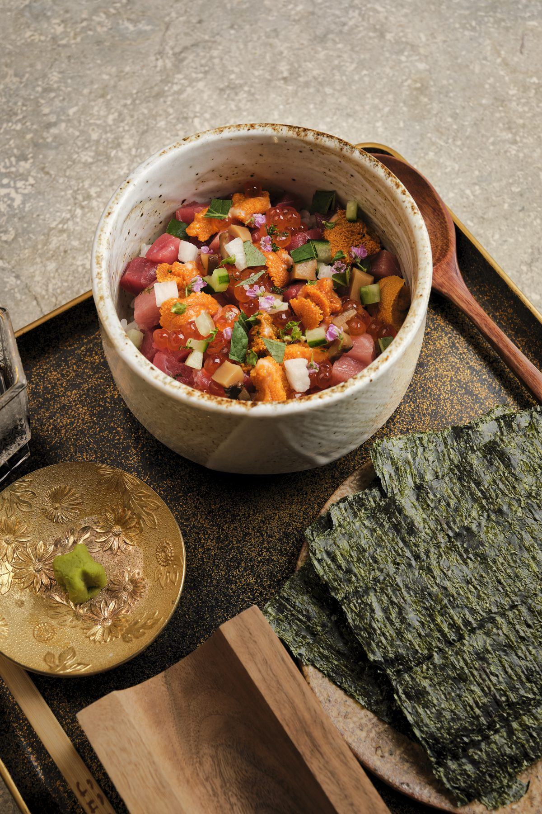
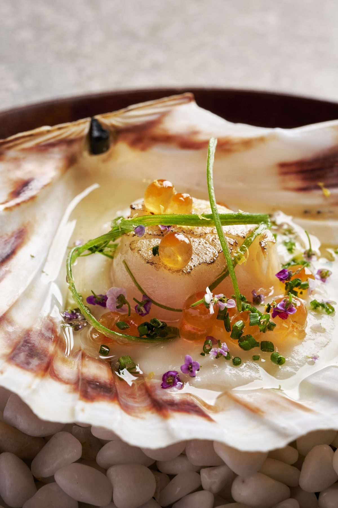
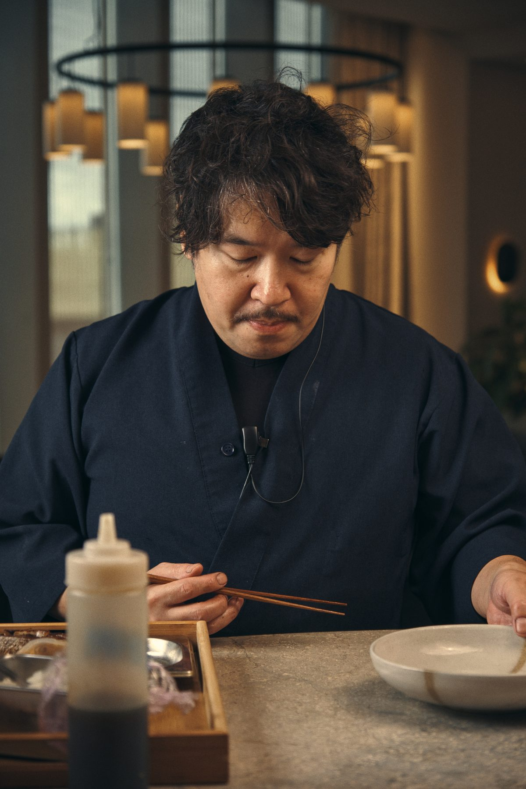

A casual izakaya on the seventh floor of The Stratford.



Sushi from the counter, small plates for sharing, wood-fire grill for mains — and a bottomless brunch on weekends.
Petite ramen, chawanmushi, aubergine dengaku, oyster katsu. Blue fin sushi in Classic or Kokin style (smoked sushi rice). Wood-fire tuna kama, Japanese wagyu short rib. Cooked over cherry wood and binchotan charcoal, selected each morning, served each evening.
View the menu
A look around. Come see it properly.
Open for lunch and dinner, Tuesday to Sunday. We take Mondays off.
Reserve a tableLunch · 12:00 – 14:00
Dinner · 18:00 – 22:30